# Install ffuf
sudo apt-get install ffuf
# Download and extract SecLists
wget -c https://github.com/danielmiessler/SecLists/archive/master.zip -O SecList.zip && unzip SecList.zip && rm -f SecList.zip
ffuf, the fuzzing tool.SecLists wordlist repository and extracts it.
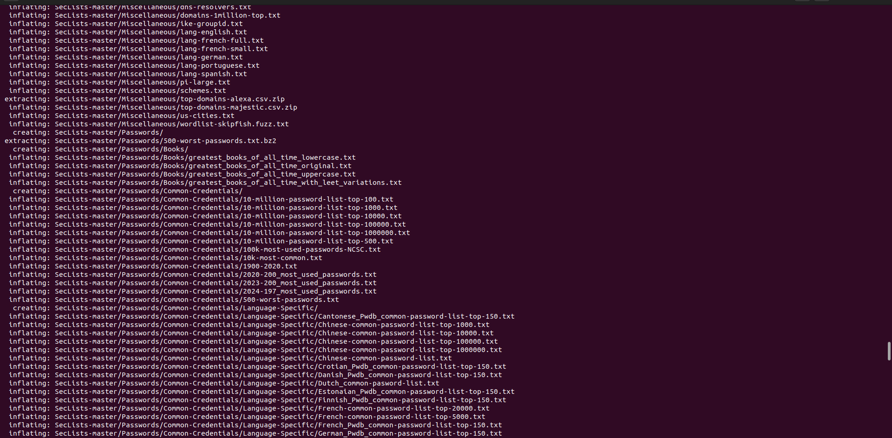
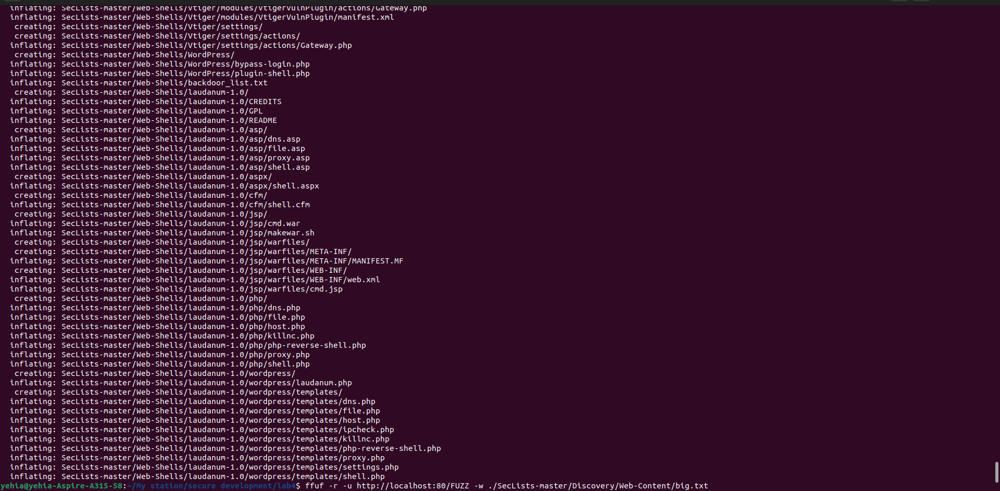
docker run -d -p 127.0.0.1:80:80 vulnerables/web-dvwa
http://localhost:80.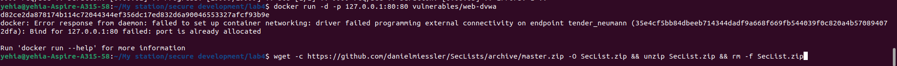
big.txt were accessible? Which ones gave interesting error codes (not 404)?ffuf -r -u http://localhost:80/FUZZ -w ./SecLists-master/Discovery/Web-Content/big.txt
big.txt.-r enables following redirects.FUZZ is replaced with entries from the wordlist.| Endpoint/File | Status Code | Description |
|---|---|---|
| .htpasswd | 403 | Forbidden access |
| .htaccess | 403 | Forbidden access |
| config | 200 | Accessible |
| docs | 200 | Accessible |
| external | 200 | Accessible |
| favicon.ico | 200 | Accessible |
| robots.txt | 200 | Accessible |
| server-status | 403 | Forbidden access |
403 Forbidden: .htpasswd, .htaccess, server-status200 OK: config, docs, external, favicon.ico, robots.txtScreenshot:
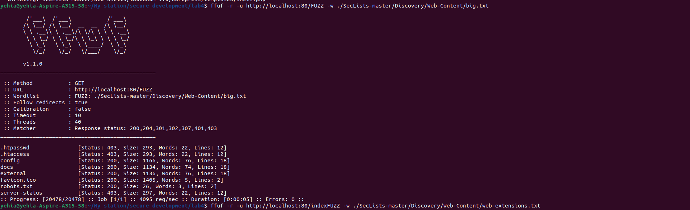
web-extensions.txt are available for the index page?ffuf -r -u http://localhost:80/indexFUZZ -w ./SecLists-master/Discovery/Web-Content/web-extensions.txt
| Extension | Status Code | Description |
|---|---|---|
| .php | 200 | Valid PHP file |
| .phps | 403 | Forbidden access |
.php (returns 200 OK)..phps (403 Forbidden).Screenshot:
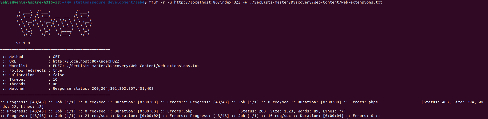
raft-medium-directories.txtraft-medium-directories.txt are accessible? Which ones gave interesting error codes?ffuf -r -u http://localhost:80/FUZZ -w ./SecLists-master/Discovery/Web-Content/raft-medium-directories.txt
| Directory | Status Code | Description |
|---|---|---|
| config | 200 | Accessible |
| docs | 200 | Accessible |
| external | 200 | Accessible |
| server-status | 403 | Forbidden access |
config, docs, external (200 OK).server-status (403 Forbidden).Screenshot:
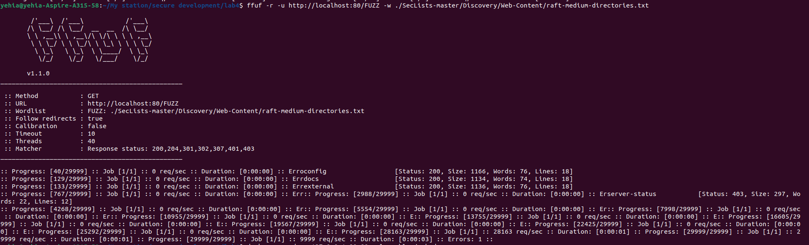
docker run --name afl -ti -v .:/src/ aflplusplus/aflplusplus
pip install python-afl
py-afl-fuzz -i input -o output -- /usr/bin/python3 /src/main.py
Ctrl+C).ls output/default/crashes/
# 5 crash files detected (id:000000 to id:000004)
README.txt id:000001,sig:10,src:000000,time:1926,execs:786,op:havoc,rep:3 id:000003,sig:10,src:000000,time:19902,execs:7445,op:havoc,rep:3
id:000000,sig:10,src:000000,time:1837,execs:750,op:havoc,rep:4 id:000002,sig:10,src:000000,time:11557,execs:4114,op:havoc,rep:4 id:000004,sig:10,src:000010,time:39711,execs:15301,op:quick,pos:16
ls output/default/hangs/
# 2 hang files detected (id:000000 and id:000001)
id:000000,src:000000,time:4061,execs:1208,op:havoc,rep:3 id:000001,src:000011,time:41933,execs:15880,op:havoc,rep:6
cat output/default/fuzzer_stats
python3 main.py < output/default/crashes/id:000000...
Error:
Traceback (most recent call last):
File "/src/main.py", line 23, in <module>
print(uridecode(sys.stdin.read()))
File "/src/main.py", line 11, in uridecode
char_code = (int(a, 16) * 16) + int(b, 16)
ValueError: invalid literal for int() with base 16: 's'
%stt has % at position 0 but lacks valid hex characters.python3 main.py < output/default/crashes/id:000004...
Error:
ValueError: invalid literal for int() with base 16: '\udc9a'
The error occurs when:
Input contains %stt (as seen in crash file id:000000)
Code tries to convert 's' to hexadecimal with int(a, 16)
Fails because 's' is not a valid hexadecimal digit (only 0-9, a-f, A-F are valid)
import afl
import sys
def uridecode(s):
ret = []
i = 0
while i < len(s):
if s[i] == '%':
# Case 1: Not enough characters after %
if i + 2 >= len(s):
ret.append(s[i])
i += 1
continue
a, b = s[i+1], s[i+2]
# Case 2: Validate hex characters
hex_chars = set('0123456789abcdefABCDEF')
if a in hex_chars and b in hex_chars:
try:
char_code = (int(a, 16) * 16) + int(b, 16)
ret.append(chr(char_code))
i += 3
except ValueError:
# Fallback for unexpected hex conversion errors
ret.append(s[i])
i += 1
else:
# Preserve invalid % sequences
ret.append(s[i])
i += 1
elif s[i] == '+':
ret.append(' ')
i += 1
else:
ret.append(s[i])
i += 1
return ''.join(ret)
if __name__ == '__main__':
afl.init()
print(uridecode(sys.stdin.read()))
% sequences.Screenshot:
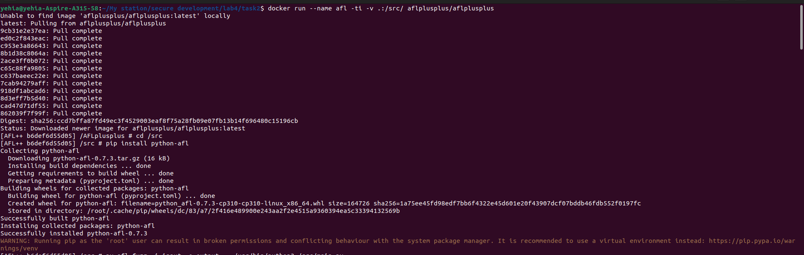
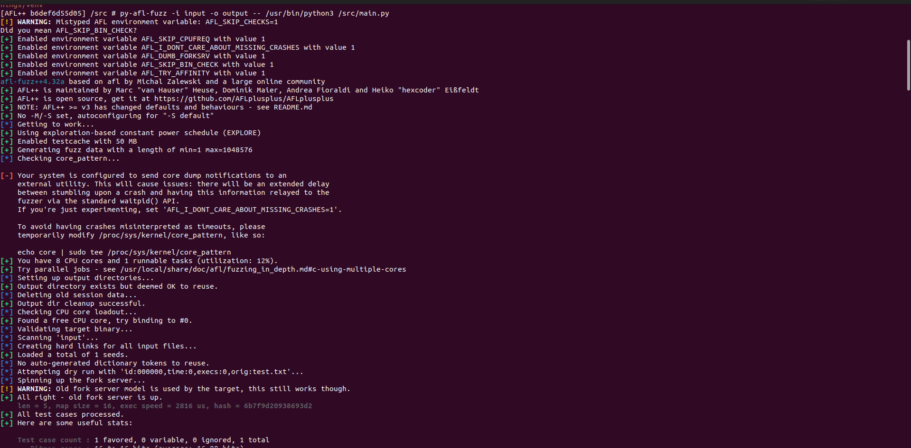
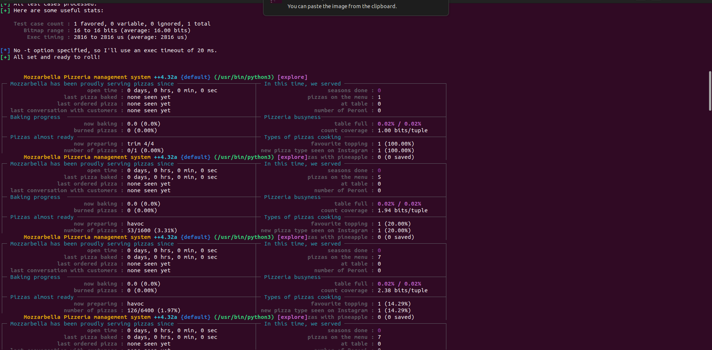
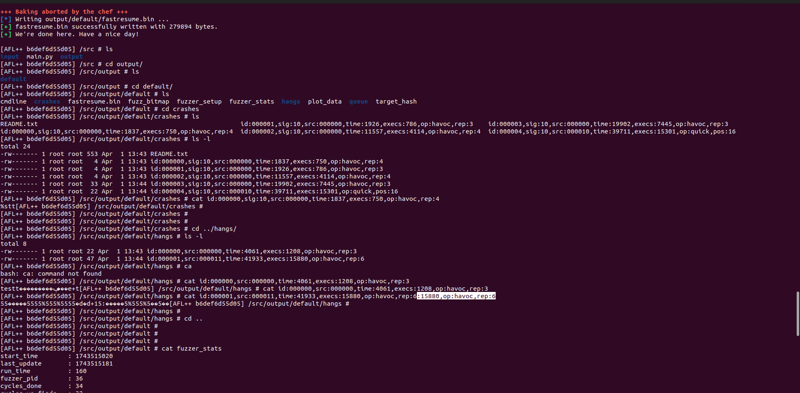
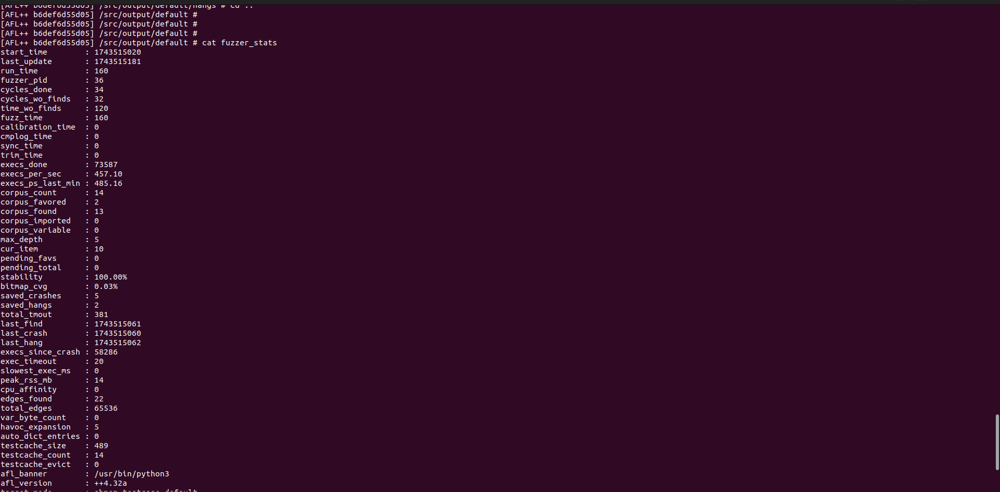
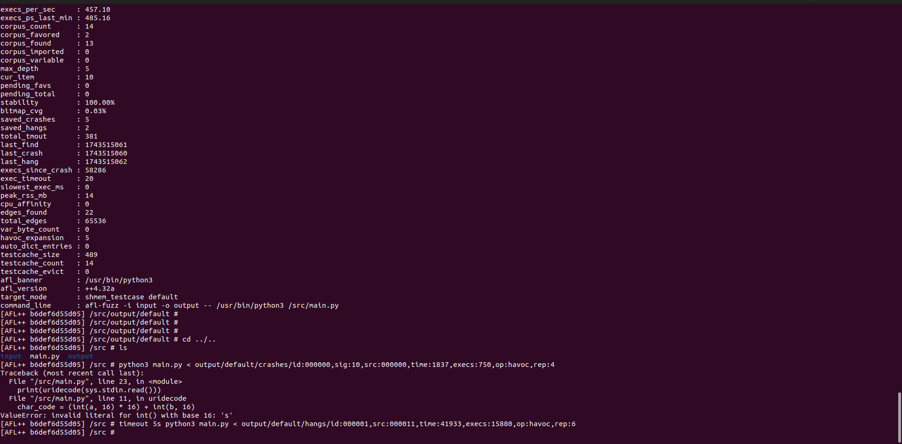